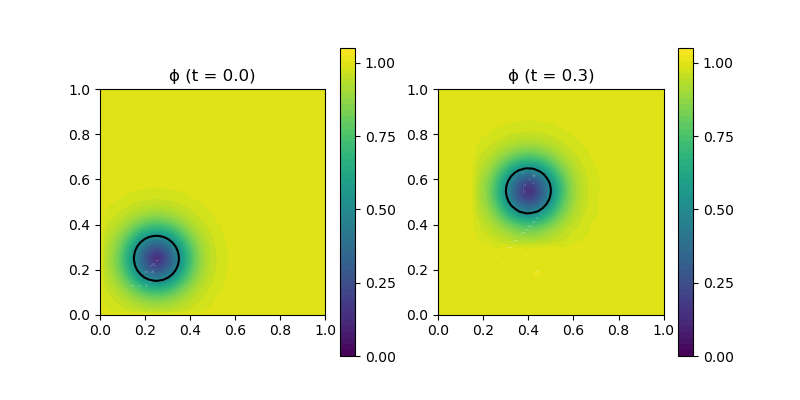

250 : Level Set Method 2D
This example studies the level-set method of some level function $\mathbf{\phi}$ convected in time via the equation
\[\begin{aligned} \phi_t + \mathbf{u} \cdot \nabla \phi & = 0. \end{aligned}\]
Here this is tested with the (conservative) initial level set function $\phi(x) = 0.5 \tanh((\lvert x - (0.25,0.25) \rvert - 0.1)/(2ϵ) + 1)$ such that the level $\phi \equiv 0.5$ forms a circle which is then convected by the velocity $\mathbf{u} = (0.5,1)^T$. No reinitialisation step is performed.
In each couple of timestep the plot is updated (where an upscaled P1 interpolation of the higher order solution is used).
module Example250_LevelSetMethod2D
using GradientRobustMultiPhysics
using ExtendableGrids
using GridVisualize
const convection = DataFunction([0.5,1])
const ϵ = 0.05
const ϕ_0 = DataFunction((result,x) -> (result[1] = 1/2 * (tanh((sqrt((x[1]-0.25)^2 + (x[2]-0.25)^2) - 0.1)/(2*ϵ))+1)), [1, 2]; dependencies = "X", bonus_quadorder = 3)
const ϕ_bnd = DataFunction([1])
# everything is wrapped in a main function
function main(; verbosity = 0, Plotter = nothing, timestep = 1//500, T = 3//10, FEType = H1P3{1,2}, nref = 3, time_integration_rule = CrankNicolson)
# set log level
set_verbosity(verbosity)
# initial grid and final time
xgrid = uniform_refine(grid_unitsquare(Triangle2D),nref)
# define main level set problem
Problem = PDEDescription("level set problem")
add_unknown!(Problem; unknown_name = "ϕ", equation_name = "convection equation")
add_operator!(Problem, [1,1], ConvectionOperator(convection,1))
add_boundarydata!(Problem, 1, [1,2,3,4], InterpolateDirichletBoundary; data = ϕ_bnd)
# generate FESpace and solution vector and interpolate initial state
Solution = FEVector("u_h",FESpace{FEType}(xgrid))
interpolate!(Solution[1], ϕ_0)
# generate time-dependent solver
TProblem = TimeControlSolver(Problem, Solution, time_integration_rule; timedependent_equations = [1], skip_update = [-1], T_time = typeof(timestep))
# init plot ans upscaling
p = GridVisualizer(; Plotter = Plotter, layout = (1,3), clear = true, resolution = (1200,400))
xgrid_upscale = uniform_refine(xgrid,5-nref)
SolutionUpscaled = FEVector{Float16}("u_h (upscaled)",FESpace{H1P1{1}}(xgrid_upscale))
nodevals = nodevalues_view(SolutionUpscaled[1])
gridplot!(p[1,1], xgrid, linewidth = 1, title = "compute grid")
# setup timestep-wise plot as a do_after_timestep callback function
plot_every::Int = ceil(1//100 / timestep)
function do_after_each_timestep(step, statistics)
if step % plot_every == 0
interpolate!(SolutionUpscaled[1],Solution[1])
scalarplot!((step == 0) ? p[1,2] : p[1,3], xgrid_upscale, nodevals[1], levels = [0.5], flimits = [-0.05,1.05], colorbarticks = [0, 0.25, 0.5, 0.75, 1], title = "ϕ (t = $(Float64(TProblem.ctime)))")
end
end
# plot initial state
do_after_each_timestep(0,nothing)
# use time control solver by GradientRobustMultiPhysics
advance_until_time!(TProblem, timestep, T; do_after_each_timestep = do_after_each_timestep)
end
endThis page was generated using Literate.jl.
Default output:
julia> Example250_LevelSetMethod2D.main()
STEP | TIME | LSRESIDUAL | RUNTIME | CHANGE
| | (total) | (s) ϕ
1 | 2.0000e-03 | 8.2207e-15 | 1.692e+00 | 7.2315e-02
2 | 4.0000e-03 | 8.8760e-15 | 1.850e-02 | 7.2223e-02
3 | 6.0000e-03 | 8.5065e-15 | 8.610e-04 | 7.2140e-02
4 | 8.0000e-03 | 8.5541e-15 | 8.115e-04 | 7.2067e-02
5 | 1.0000e-02 | 8.4334e-15 | 7.703e-04 | 7.2003e-02
6 | 1.2000e-02 | 8.1995e-15 | 8.255e-04 | 7.1944e-02
7 | 1.4000e-02 | 7.9294e-15 | 8.085e-04 | 7.1888e-02
8 | 1.6000e-02 | 8.1495e-15 | 7.643e-04 | 7.1832e-02
9 | 1.8000e-02 | 8.5572e-15 | 7.444e-04 | 7.1775e-02
10 | 2.0000e-02 | 8.0623e-15 | 7.456e-04 | 7.1715e-02
11 | 2.2000e-02 | 7.7169e-15 | 7.977e-04 | 7.1652e-02
12 | 2.4000e-02 | 8.2101e-15 | 7.652e-04 | 7.1589e-02
13 | 2.6000e-02 | 7.9733e-15 | 7.571e-04 | 7.1528e-02
14 | 2.8000e-02 | 8.0382e-15 | 5.707e-04 | 7.1473e-02
15 | 3.0000e-02 | 8.1746e-15 | 7.562e-04 | 7.1429e-02
16 | 3.2000e-02 | 8.7732e-15 | 7.933e-04 | 7.1398e-02
17 | 3.4000e-02 | 8.2306e-15 | 7.501e-04 | 7.1384e-02
18 | 3.6000e-02 | 8.1704e-15 | 7.583e-04 | 7.1388e-02
19 | 3.8000e-02 | 8.0660e-15 | 7.545e-04 | 7.1409e-02
20 | 4.0000e-02 | 8.0544e-15 | 7.462e-04 | 7.1446e-02
21 | 4.2000e-02 | 8.5683e-15 | 8.177e-04 | 7.1494e-02
22 | 4.4000e-02 | 8.4093e-15 | 7.776e-04 | 7.1547e-02
23 | 4.6000e-02 | 8.2474e-15 | 7.443e-04 | 7.1600e-02
24 | 4.8000e-02 | 8.1749e-15 | 7.471e-04 | 7.1646e-02
25 | 5.0000e-02 | 8.0578e-15 | 7.426e-04 | 7.1679e-02
26 | 5.2000e-02 | 7.9112e-15 | 7.944e-04 | 7.1695e-02
27 | 5.4000e-02 | 8.0519e-15 | 7.514e-04 | 7.1691e-02
28 | 5.6000e-02 | 8.2840e-15 | 7.450e-04 | 7.1667e-02
29 | 5.8000e-02 | 7.8904e-15 | 7.437e-04 | 7.1624e-02
30 | 6.0000e-02 | 8.5488e-15 | 7.816e-04 | 7.1566e-02
31 | 6.2000e-02 | 8.5969e-15 | 8.132e-04 | 7.1498e-02
32 | 6.4000e-02 | 7.4486e-15 | 7.700e-04 | 7.1425e-02
33 | 6.6000e-02 | 8.3523e-15 | 7.634e-04 | 7.1353e-02
34 | 6.8000e-02 | 8.3022e-15 | 7.506e-04 | 7.1287e-02
35 | 7.0000e-02 | 8.2446e-15 | 7.449e-04 | 7.1231e-02
36 | 7.2000e-02 | 8.3545e-15 | 8.302e-04 | 7.1187e-02
37 | 7.4000e-02 | 7.8526e-15 | 7.636e-04 | 7.1157e-02
38 | 7.6000e-02 | 8.2568e-15 | 7.438e-04 | 7.1141e-02
39 | 7.8000e-02 | 8.3321e-15 | 5.747e-04 | 7.1137e-02
40 | 8.0000e-02 | 8.8624e-15 | 7.389e-04 | 7.1144e-02
41 | 8.2000e-02 | 8.2174e-15 | 8.212e-04 | 7.1159e-02
42 | 8.4000e-02 | 7.8109e-15 | 5.970e-04 | 7.1182e-02
43 | 8.6000e-02 | 8.8083e-15 | 6.006e-04 | 7.1211e-02
44 | 8.8000e-02 | 8.1150e-15 | 7.508e-04 | 7.1246e-02
45 | 9.0000e-02 | 7.7130e-15 | 7.868e-04 | 7.1288e-02
46 | 9.2000e-02 | 8.6177e-15 | 8.116e-04 | 7.1339e-02
47 | 9.4000e-02 | 8.6154e-15 | 8.233e-04 | 7.1398e-02
48 | 9.6000e-02 | 8.0440e-15 | 7.708e-04 | 7.1468e-02
49 | 9.8000e-02 | 8.1044e-15 | 7.525e-04 | 7.1547e-02
50 | 1.0000e-01 | 8.0933e-15 | 8.067e-04 | 7.1634e-02
51 | 1.0200e-01 | 8.2392e-15 | 7.915e-04 | 7.1727e-02
52 | 1.0400e-01 | 8.5048e-15 | 7.545e-04 | 7.1821e-02
53 | 1.0600e-01 | 8.4304e-15 | 7.560e-04 | 7.1911e-02
54 | 1.0800e-01 | 8.2230e-15 | 7.516e-04 | 7.1991e-02
55 | 1.1000e-01 | 8.5077e-15 | 7.841e-04 | 7.2055e-02
56 | 1.1200e-01 | 8.5503e-15 | 8.198e-04 | 7.2098e-02
57 | 1.1400e-01 | 8.3357e-15 | 7.720e-04 | 7.2116e-02
58 | 1.1600e-01 | 7.7623e-15 | 8.148e-04 | 7.2107e-02
59 | 1.1800e-01 | 7.7230e-15 | 7.659e-04 | 7.2071e-02
60 | 1.2000e-01 | 8.4083e-15 | 7.482e-04 | 7.2010e-02
61 | 1.2200e-01 | 8.2189e-15 | 8.141e-04 | 7.1928e-02
62 | 1.2400e-01 | 8.4504e-15 | 7.697e-04 | 7.1831e-02
63 | 1.2600e-01 | 8.7188e-15 | 7.497e-04 | 7.1724e-02
64 | 1.2800e-01 | 8.4903e-15 | 7.513e-04 | 7.1614e-02
65 | 1.3000e-01 | 7.8704e-15 | 7.825e-04 | 7.1507e-02
66 | 1.3200e-01 | 8.6259e-15 | 8.118e-04 | 7.1407e-02
67 | 1.3400e-01 | 8.1889e-15 | 7.760e-04 | 7.1317e-02
68 | 1.3600e-01 | 7.9954e-15 | 8.016e-04 | 7.1238e-02
69 | 1.3800e-01 | 8.2507e-15 | 7.674e-04 | 7.1172e-02
70 | 1.4000e-01 | 8.1962e-15 | 7.470e-04 | 7.1116e-02
71 | 1.4200e-01 | 8.4355e-15 | 8.201e-04 | 7.1069e-02
72 | 1.4400e-01 | 8.4416e-15 | 7.723e-04 | 7.1029e-02
73 | 1.4600e-01 | 8.4066e-15 | 7.510e-04 | 7.0995e-02
74 | 1.4800e-01 | 8.8222e-15 | 7.499e-04 | 7.0966e-02
75 | 1.5000e-01 | 8.2261e-15 | 7.477e-04 | 7.0941e-02
76 | 1.5200e-01 | 7.6287e-15 | 8.153e-04 | 7.0924e-02
77 | 1.5400e-01 | 8.5157e-15 | 7.681e-04 | 7.0915e-02
78 | 1.5600e-01 | 8.3102e-15 | 7.644e-04 | 7.0916e-02
79 | 1.5800e-01 | 8.2289e-15 | 7.508e-04 | 7.0931e-02
80 | 1.6000e-01 | 8.5487e-15 | 7.510e-04 | 7.0960e-02
81 | 1.6200e-01 | 9.1521e-15 | 8.334e-04 | 7.1003e-02
82 | 1.6400e-01 | 7.4836e-15 | 7.703e-04 | 7.1060e-02
83 | 1.6600e-01 | 8.4873e-15 | 7.488e-04 | 7.1128e-02
84 | 1.6800e-01 | 8.5207e-15 | 7.455e-04 | 7.1203e-02
85 | 1.7000e-01 | 8.7421e-15 | 7.458e-04 | 7.1280e-02
86 | 1.7200e-01 | 8.2710e-15 | 8.168e-04 | 7.1354e-02
87 | 1.7400e-01 | 7.6820e-15 | 7.670e-04 | 7.1421e-02
88 | 1.7600e-01 | 8.0289e-15 | 7.525e-04 | 7.1476e-02
89 | 1.7800e-01 | 8.1337e-15 | 5.917e-04 | 7.1517e-02
90 | 1.8000e-01 | 8.3625e-15 | 7.509e-04 | 7.1543e-02
91 | 1.8200e-01 | 8.4080e-15 | 8.175e-04 | 7.1555e-02
92 | 1.8400e-01 | 8.1099e-15 | 8.033e-04 | 7.1554e-02
93 | 1.8600e-01 | 8.3239e-15 | 7.588e-04 | 7.1544e-02
94 | 1.8800e-01 | 8.5525e-15 | 7.497e-04 | 7.1528e-02
95 | 1.9000e-01 | 8.3643e-15 | 7.497e-04 | 7.1510e-02
96 | 1.9200e-01 | 8.3184e-15 | 8.088e-04 | 7.1494e-02
97 | 1.9400e-01 | 8.5575e-15 | 7.645e-04 | 7.1482e-02
98 | 1.9600e-01 | 8.2731e-15 | 7.554e-04 | 7.1475e-02
99 | 1.9800e-01 | 8.3676e-15 | 7.485e-04 | 7.1473e-02
100 | 2.0000e-01 | 8.5876e-15 | 7.836e-04 | 7.1475e-02
101 | 2.0200e-01 | 8.1473e-15 | 8.204e-04 | 7.1479e-02
102 | 2.0400e-01 | 8.5366e-15 | 8.080e-04 | 7.1483e-02
103 | 2.0600e-01 | 8.4058e-15 | 7.702e-04 | 7.1485e-02
104 | 2.0800e-01 | 8.5076e-15 | 7.493e-04 | 7.1485e-02
105 | 2.1000e-01 | 8.3786e-15 | 7.489e-04 | 7.1480e-02
106 | 2.1200e-01 | 8.1937e-15 | 8.661e-04 | 7.1473e-02
107 | 2.1400e-01 | 8.4238e-15 | 8.176e-04 | 7.1464e-02
108 | 2.1600e-01 | 8.4054e-15 | 8.218e-04 | 7.1454e-02
109 | 2.1800e-01 | 9.0019e-15 | 8.281e-04 | 7.1448e-02
110 | 2.2000e-01 | 7.9830e-15 | 8.628e-04 | 7.1446e-02
111 | 2.2200e-01 | 8.7537e-15 | 8.175e-04 | 7.1451e-02
112 | 2.2400e-01 | 8.1265e-15 | 8.048e-04 | 7.1462e-02
113 | 2.2600e-01 | 8.3599e-15 | 7.670e-04 | 7.1479e-02
114 | 2.2800e-01 | 7.9695e-15 | 7.485e-04 | 7.1501e-02
115 | 2.3000e-01 | 8.3671e-15 | 7.504e-04 | 7.1524e-02
116 | 2.3200e-01 | 8.0454e-15 | 1.026e-03 | 7.1547e-02
117 | 2.3400e-01 | 8.8028e-15 | 8.482e-04 | 7.1564e-02
118 | 2.3600e-01 | 8.5487e-15 | 7.789e-04 | 7.1575e-02
119 | 2.3800e-01 | 8.5894e-15 | 7.693e-04 | 7.1576e-02
120 | 2.4000e-01 | 7.8979e-15 | 5.776e-04 | 7.1567e-02
121 | 2.4200e-01 | 8.0292e-15 | 8.212e-04 | 7.1548e-02
122 | 2.4400e-01 | 8.6158e-15 | 7.637e-04 | 7.1522e-02
123 | 2.4600e-01 | 8.2106e-15 | 7.499e-04 | 7.1492e-02
124 | 2.4800e-01 | 8.1939e-15 | 7.577e-04 | 7.1461e-02
125 | 2.5000e-01 | 8.0705e-15 | 7.501e-04 | 7.1433e-02
126 | 2.5200e-01 | 8.6300e-15 | 8.129e-04 | 7.1412e-02
127 | 2.5400e-01 | 8.4801e-15 | 8.079e-04 | 7.1401e-02
128 | 2.5600e-01 | 7.9975e-15 | 7.630e-04 | 7.1402e-02
129 | 2.5800e-01 | 8.8430e-15 | 7.455e-04 | 7.1415e-02
130 | 2.6000e-01 | 8.3042e-15 | 7.449e-04 | 7.1438e-02
131 | 2.6200e-01 | 7.8730e-15 | 8.134e-04 | 7.1470e-02
132 | 2.6400e-01 | 7.6197e-15 | 7.636e-04 | 7.1508e-02
133 | 2.6600e-01 | 7.9066e-15 | 7.439e-04 | 7.1548e-02
134 | 2.6800e-01 | 8.1121e-15 | 7.429e-04 | 7.1588e-02
135 | 2.7000e-01 | 8.2305e-15 | 7.433e-04 | 7.1624e-02
136 | 2.7200e-01 | 8.4885e-15 | 8.102e-04 | 7.1654e-02
137 | 2.7400e-01 | 8.0731e-15 | 7.615e-04 | 7.1679e-02
138 | 2.7600e-01 | 8.9337e-15 | 7.442e-04 | 7.1698e-02
139 | 2.7800e-01 | 8.2079e-15 | 7.621e-04 | 7.1711e-02
140 | 2.8000e-01 | 8.3719e-15 | 7.413e-04 | 7.1720e-02
141 | 2.8200e-01 | 8.1997e-15 | 8.100e-04 | 7.1725e-02
142 | 2.8400e-01 | 7.9703e-15 | 7.778e-04 | 7.1729e-02
143 | 2.8600e-01 | 7.8795e-15 | 7.622e-04 | 7.1731e-02
144 | 2.8800e-01 | 8.3232e-15 | 7.432e-04 | 7.1730e-02
145 | 2.9000e-01 | 8.2366e-15 | 7.419e-04 | 7.1726e-02
146 | 2.9200e-01 | 8.0485e-15 | 8.193e-04 | 7.1717e-02
147 | 2.9400e-01 | 8.1379e-15 | 7.654e-04 | 7.1701e-02
148 | 2.9600e-01 | 7.7401e-15 | 7.474e-04 | 7.1676e-02
149 | 2.9800e-01 | 8.6381e-15 | 7.470e-04 | 7.1641e-02
150 | 3.0000e-01 | 8.6452e-15 | 7.607e-04 | 7.1595e-02 